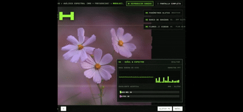

BIO//GLITCH
Una plataforma audiovisual experimental sobre el conflicto entre naturaleza y tecnología. El movimiento de una flor se traduce en sonido, y la actividad sonora intensifica a su vez las interferencias digitales sobre la imagen.
- Año
- 2026
- Disciplina
- Interactivo / Web
- Rol
- Ideación y programación de la página
- Herramientas
- HTML, CSS, JavaScript
